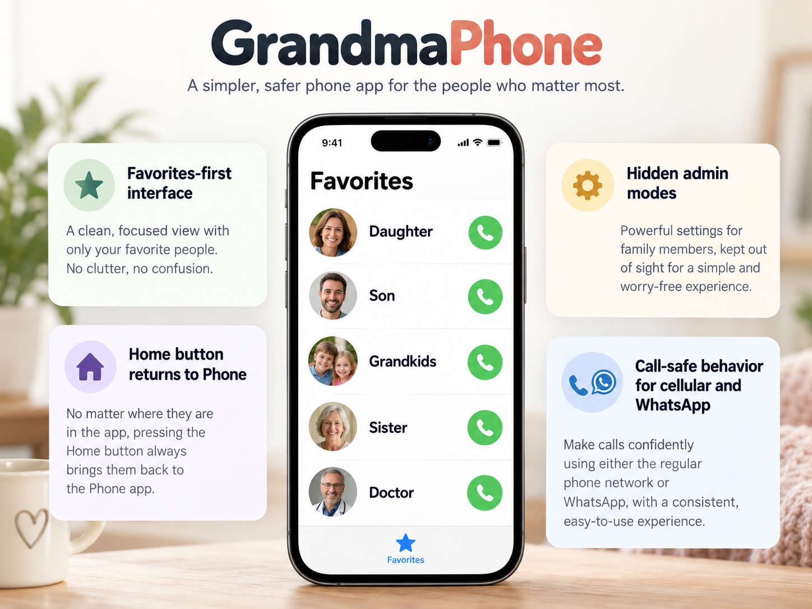

GrandmaPhone
Favorites first. Calls stay familiar.
Grandma ModeAdminSuper AdminCall-aware
Turns the Phone app into a focused Favorites experience, blocks confusing system gestures during everyday use, preserves normal calls, and gives family hidden maintenance modes when needed.

View package details →

GrandmaClock
Clearer time without huge global text.
Large clockDateCharging textStatus bar
Improves the pieces Grandma needs to read most while leaving unrelated apps at their normal text size. Dynamic width handling keeps enlarged times readable after resprings.

View package details →